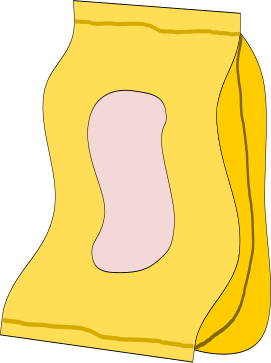
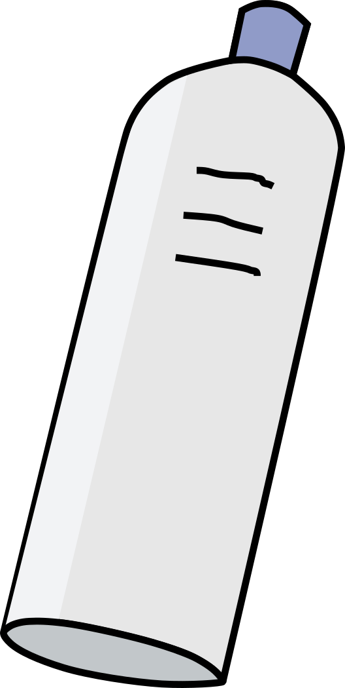
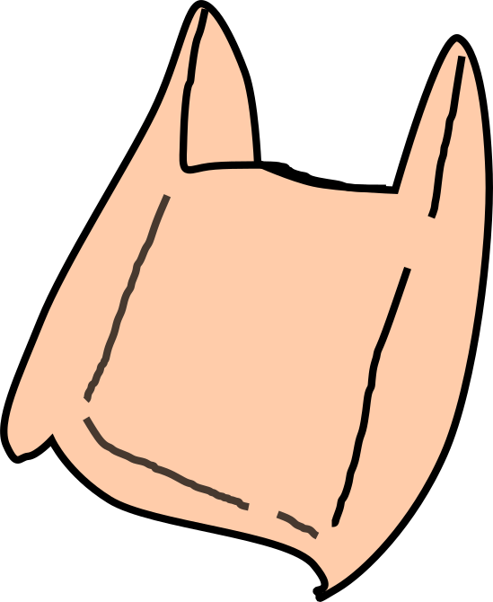
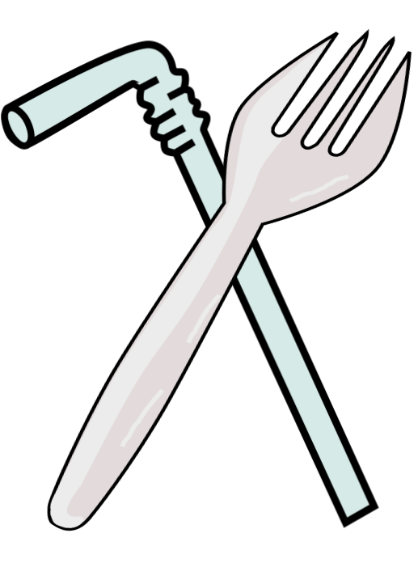
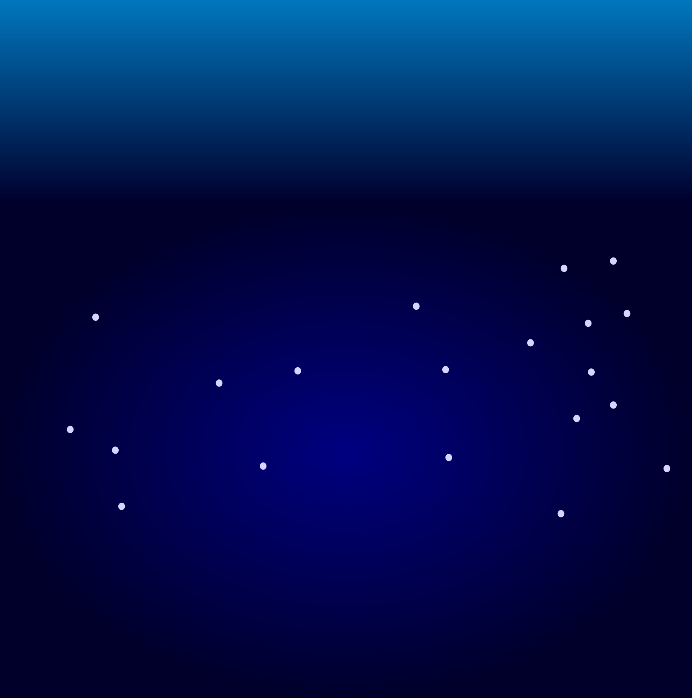
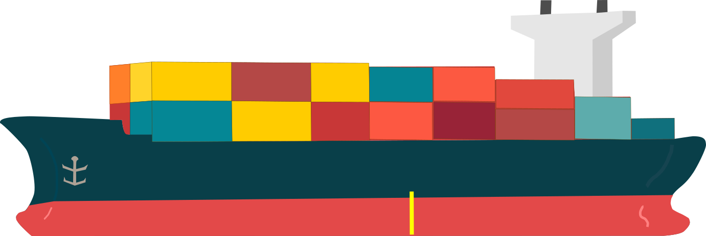

環境汙染
環境汙染是指由人類活動引起的對自然環境造成的不良影響和破壞。目前海洋污染絕大多數都是來自於陸地人為製造的，包括：塑膠污染、重金屬污染以及油污染等。這些污染均會造成生態破壞並且對海洋生物有害。
汙染類型比例
膠汙染
80%
汙染
12%
金屬
5%
他
3%
海洋污染的主要成分包括塑膠污染、油污染、重金屬污染和其他污染物。塑膠垃圾是最大的污染源，約佔海洋污染的60-80%。油污染主要來自船舶洩漏和海上石油鑽井平台，約佔12%。重金屬污染如汞、鉛和鎘主要來自工業排放和農業逕流，佔不到5%。其他污染物，包括化學污染、營養物污染和生物污染，合計佔據剩餘的3-23%。這些比例是基於一般估計，實際情況可能因地區和時間有所不同。詳細的研究和監測數據對於準確評估各類型污染在海洋污染中的比例至關重要。




塑膠汙染
塑膠汙染是指在自然環境中大量存在的塑膠製品對環境造成的污染。塑膠是一種常見的人造材料，具有耐用性和輕便性，因此被廣泛使用。然而，塑膠製品的過度使用和遺棄導致了塑膠汙染的嚴重問題。
流入海中的寶特瓶、塑膠容器、漁具等廢棄物，可能使海洋生物被纏繞而亡，或是被鯨魚、海鳥、海龜和魚類誤食，造成牠們因胃部塞滿塑膠、無法消化而餓死
塑膠類型比例
品包裝
40%
特瓶
20%
膠袋
15%
次性
用品
10%
在現代社會中，塑膠製品的廣泛使用導致了大量的塑膠廢棄物。以下是四類主要塑膠廢棄物的比例及其影響：
食品包裝（40%）：
食品包裝是最大的塑膠廢棄物來源，包括包裝膜、容器和零食袋等。由於使用壽命短，這類廢棄物大量產生且難以回收，對環境造成嚴重污染。
寶特瓶（20%）：
寶特瓶（如PET瓶）占塑膠廢棄物的20%。雖然PET瓶可以回收，但大量的使用和不當處理導致了廣泛的環境污染。
塑膠袋（15%）：
塑膠袋占15%。它們因輕便和多用途被廣泛使用，但也因容易隨風飄散而成為主要的環境污染源之一。
一次性用品（10%）：
一次性用品如塑膠餐具、吸管等，占塑膠廢棄物的10%。這些產品使用時間短，但對環境的破壞卻持續多年。
食品包裝（40%）：
食品包裝是最大的塑膠廢棄物來源，包括包裝膜、容器和零食袋等。由於使用壽命短，這類廢棄物大量產生且難以回收，對環境造成嚴重污染。
寶特瓶（20%）：
寶特瓶（如PET瓶）占塑膠廢棄物的20%。雖然PET瓶可以回收，但大量的使用和不當處理導致了廣泛的環境污染。
塑膠袋（15%）：
塑膠袋占15%。它們因輕便和多用途被廣泛使用，但也因容易隨風飄散而成為主要的環境污染源之一。
一次性用品（10%）：
一次性用品如塑膠餐具、吸管等，占塑膠廢棄物的10%。這些產品使用時間短，但對環境的破壞卻持續多年。

油汙染
船隻漏油、燃料排放等引起的油汙石油泄漏對生態環境的影響相當廣泛，海鳥羽毛沾上石油便無法飛翔，鯨魚、海豚及其他海洋生物游過漏油水域或吸入有毒氣體會呼吸困難或死亡
